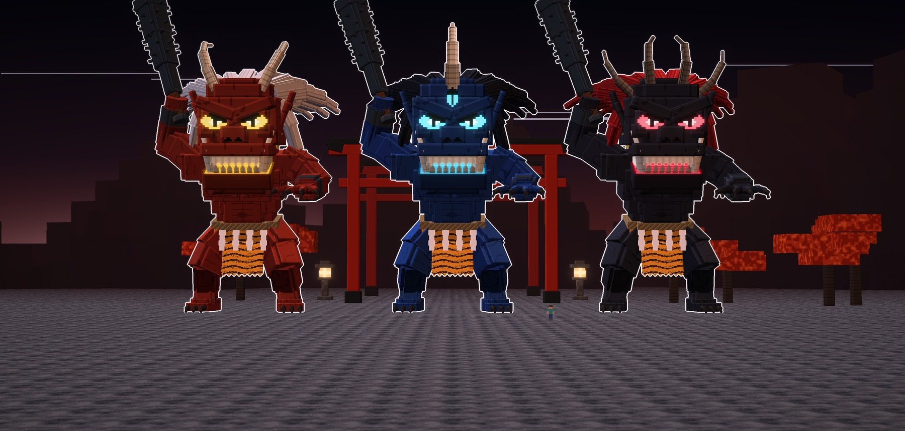
Atalaya · jefe · ficha de diseño · 15-10-2026
El Oni y sus tipos
El Oni, el demonio de Japón: un gigante con cuernos, una boca de oreja a oreja que arde por
dentro, los colmillos de abajo hacia arriba, la melena salvaje, el taparrabos de piel de tigre y el
kanabo, el garrote de hierro con pinchos, alzado para aplastarte. Tiene tres tipos: el Rojo,
el Azul y el Negro.
Los tres tipos son el mismo jefe y tienen la misma pose de ataque. Está plantado con las piernas
abiertas, echado hacia delante, con el kanabo alzado en una mano y la otra mano tendida hacia ti con las garras
abiertas, rugiendo. Cambian los cuernos, los ojos, la melena y el color.
- Que intimide:
- mide 54 bloques con el kanabo en alto;
- los ojos rasgados arden bajo un ceño de hueso;
- la boca enseña las dos filas de dientes con la luz entre ellas.
- No es el Minotauro: tiene cara de demonio, no cabeza de toro. Tampoco tiene giba, y su postura es de
ataque.
- Lo de la leyenda: los colores clásicos de los oni (rojo, azul y negro), el kanabo, la piel de tigre, la
cuerda sagrada con sus papeles en zigzag y el collar de cuentas.
Vive en un santuario de noche, con el torii bermellón detrás, faroles de piedra encendidos, arces
rojos, la luna y hojas rojas que caen. Las fotos van sin letras y con el borde blanco, y cada tipo tiene su
cartel.
Cómo es el Oni
La cabeza
- La cara de demonio: ancha, con el ceño de hueso, los ojos rasgados que arden, los pómulos y la nariz
chata.
- La boca de oreja a oreja, abierta, con las dos filas de dientes en hoja. Dentro arden el paladar y el
suelo de la boca, y al fondo la garganta.
- Dos colmillos que suben por fuera de la boca, y las orejas en punta con su aro de oro.
- La melena salvaje, en mechones gruesos que se echan hacia atrás.
El cuerpo
- Macizo: el pecho y los hombros anchos y el cuello de toro, con las piernas cortas y abiertas.
- El taparrabos de piel de tigre, la cuerda sagrada con los papeles en zigzag y el collar de cuentas.
- Brazales de hierro, garras en las manos y en los pies, y el grillete de los tobillos.
- El kanabo: hierro que engorda hacia la punta, con bandas y seis filas de pinchos.
Los tres tipos
A · el Rojo · oro
El Rojo (Aka-oni)
Dos cuernos que se curvan hacia atrás y la melena blanca. La piel es roja y la luz,
de oro.
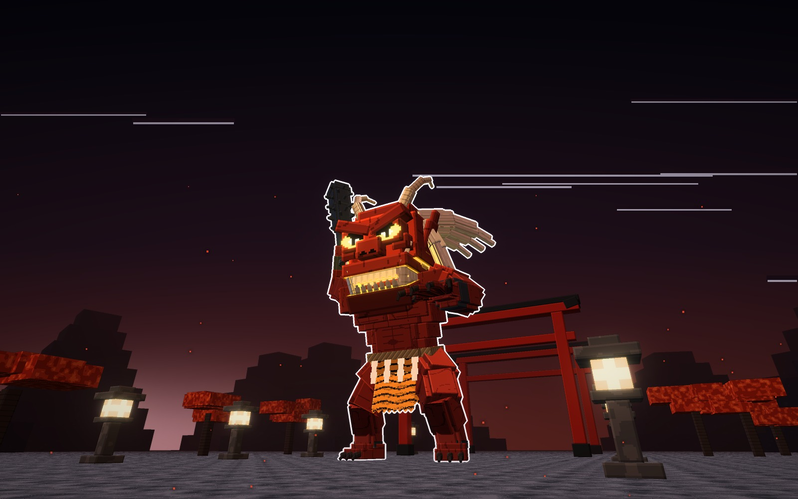
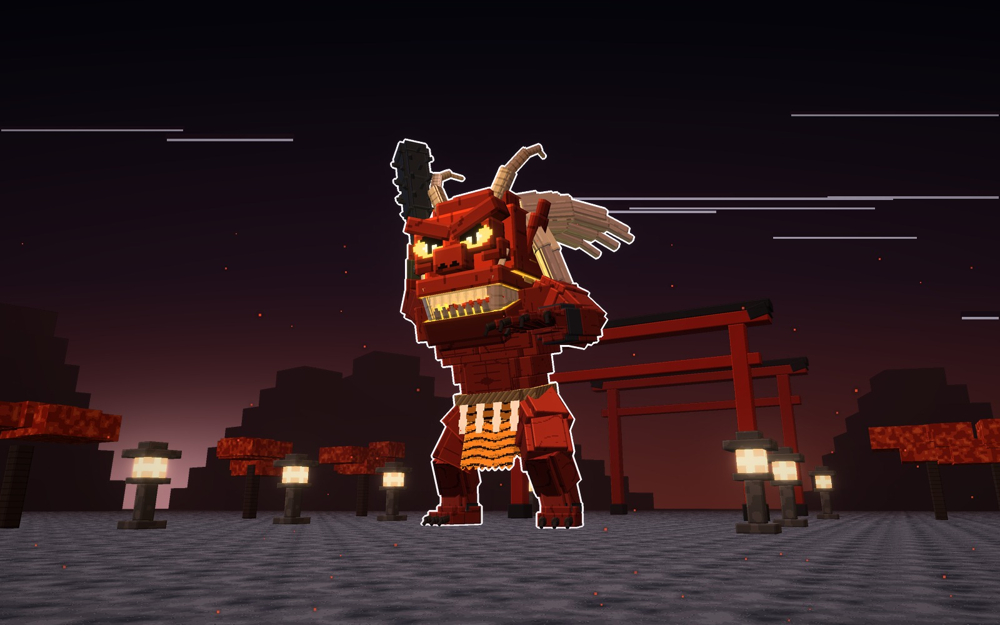
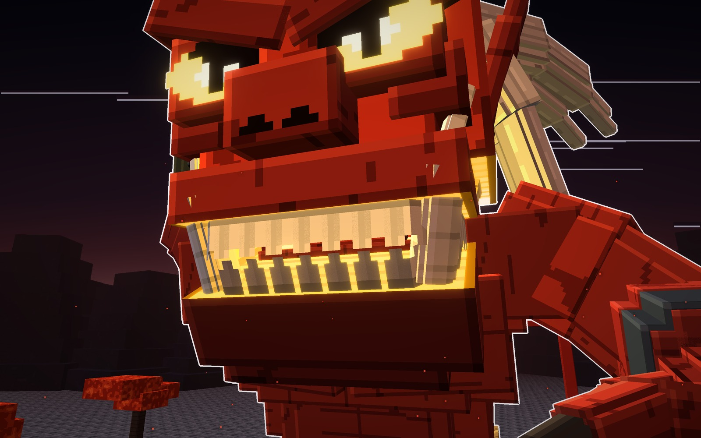
Su forma
- Cuernos
- dos, curvos
- Melena
- blanca
- Luz
- oro
Señas
- 54 bloques de alto con el kanabo y 35 de ancho.
pielmelenacuernosluz
B · el Azul · cian
El Azul (Ao-oni)
Un solo cuerno enorme en medio de la frente, un tercer ojo que arde debajo y la
melena negra. La piel es azul y la luz, cian.
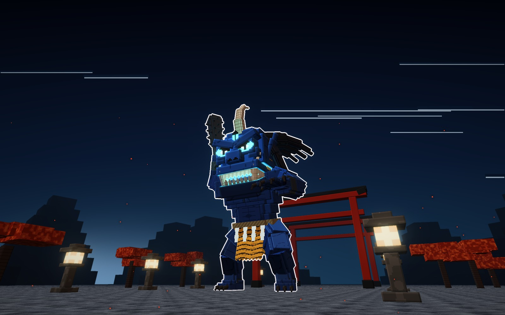
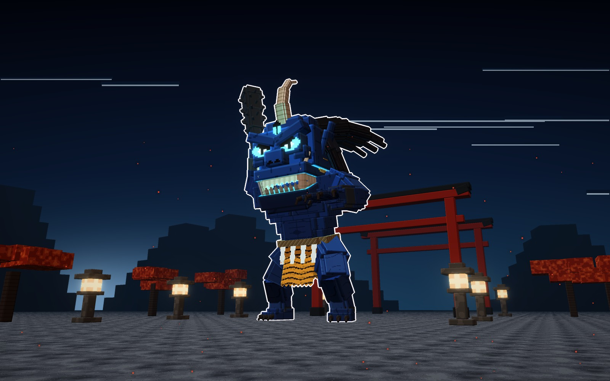
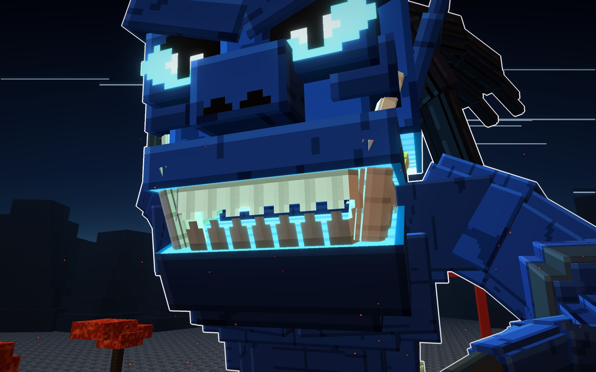
Su forma
- Cuernos
- uno, enorme
- Ojos
- tres
- Luz
- cian
Señas
- 54 bloques de alto con el kanabo.
pielmelenacuernoluz
C · el Negro · carmesí
El Negro (Kuro-oni)
Una corona de cuatro cuernos oscuros y la melena roja. La piel es negra y la luz,
carmesí.
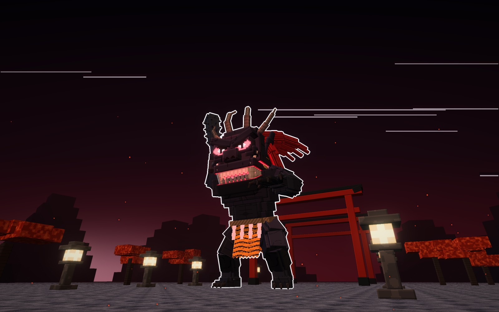
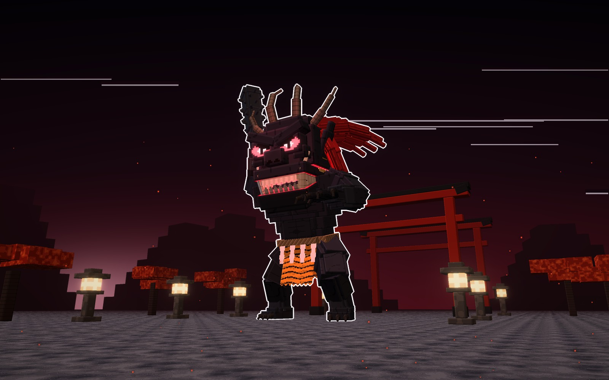
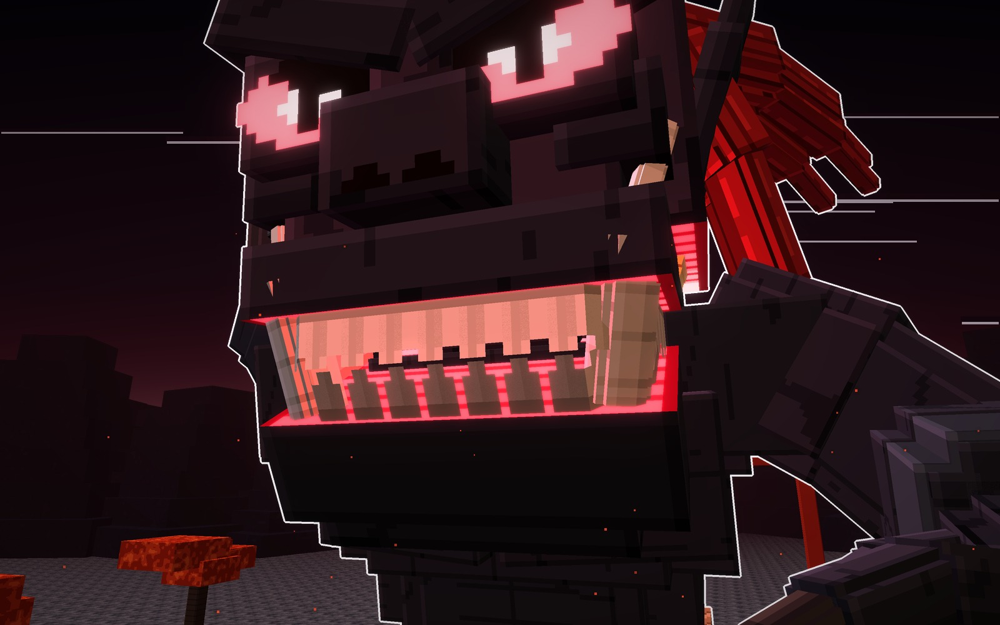
Su forma
- Cuernos
- cuatro, en corona
- Melena
- roja
- Luz
- carmesí
Señas
- 54 bloques de alto con el kanabo.
pielmelenacuernosluz
Los tres, a escala
Los tres juntos, de frente, con la misma luz y un jugador delante (1,8 bloques).
el Rojo54 de alto · 35 de ancho
el Azul54 de alto · 35 de ancho
el Negro54 de alto · 35 de ancho
Los materiales
Las texturas de cada tipo a píxel grande, sin letras. Hay una fila por tipo y, de izquierda a derecha,
van: la piel, el pecho, la nariz, el ojo, el paladar, la garganta, los dientes, el mechón, el cuerno, el colmillo, la
piel de tigre, la cuerda sagrada, el papel en zigzag y el hierro.
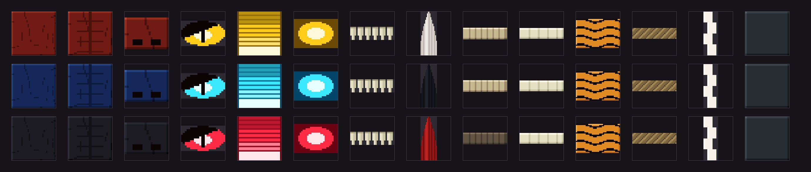
Veredicto de Juan
15-10-2026. Juan lo aprobó con sus tres tipos en la misma pose: «me gustó sí, guárdalo». Después pidió dejar
los jefes y pasar a los mobs normales.
Bocetos: materiales/generadores/oni_modelo.py y oni_escenas.py, hechos desde cero.